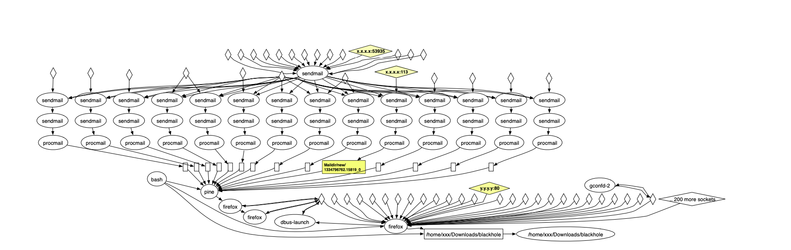
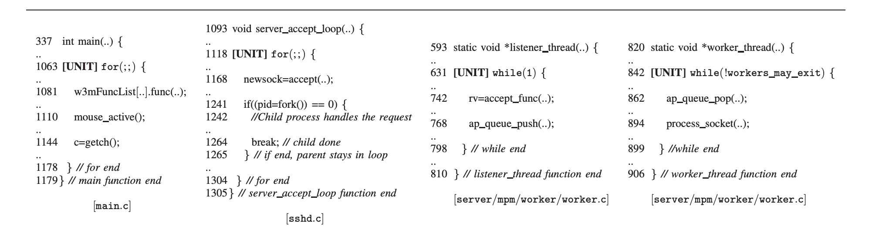
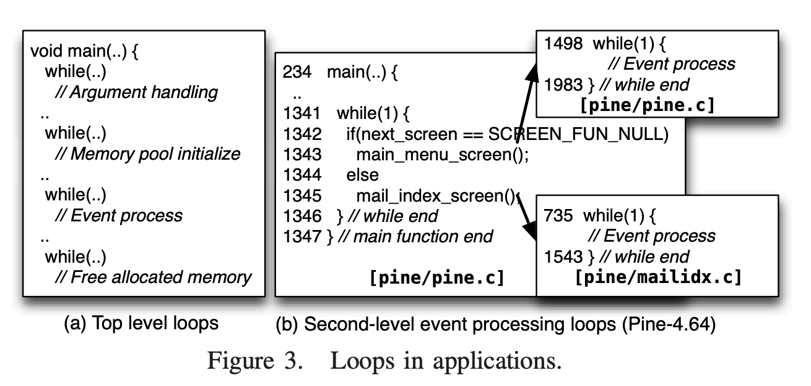
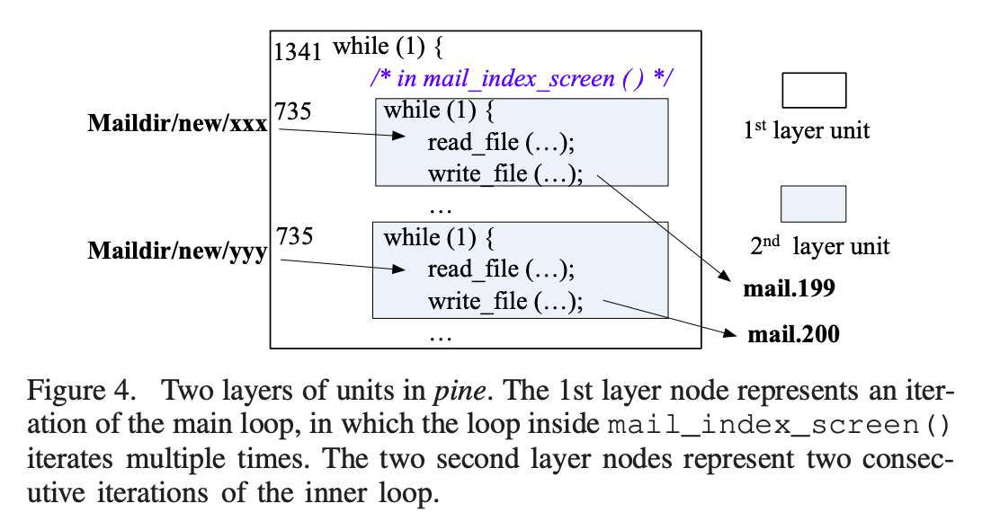
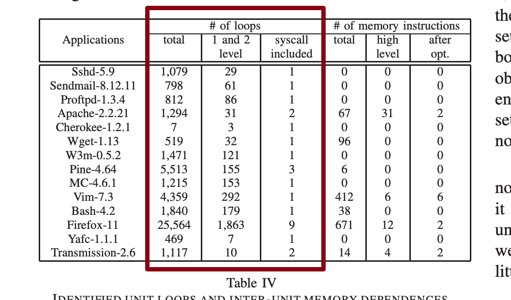
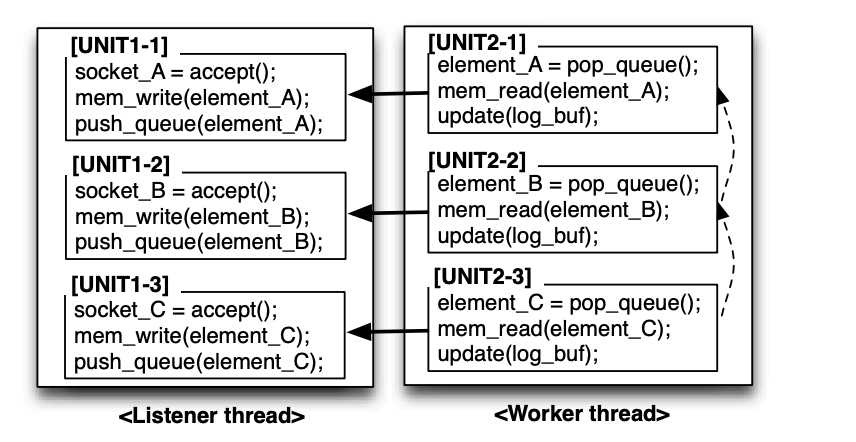
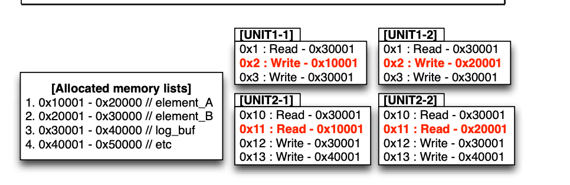

APT溯源图构建-论文阅读第二篇-BEEP-High Accuracy Attack Provenance via Binary-based Execution Partition
Overview
这篇文章是19年的时候作者觉得现在基于syscall的日志粒度太粗糙了，可能引起路径爆炸的问题，所以提出了一个unit的概念用来精细化。
为什么粗糙？
其实只要是一些长时间跑的程序会有，比如浏览器，比如email软件。

比如一天一个人会收到无数封邮件，其中有一封是钓鱼邮件，这个受害者使用Pine（一个文本基的电子邮件客户端）触发firefox打开钓鱼邮件里面恶意链接之后，中了木马。
因为邮件程序和firefox程序都是在长时间运行，所以一旦出了问题难以溯源，究竟是哪一封邮件，触发哪一个钓鱼IP导致的问题。
Existing Heuristics method
一些现有的解决这个问题的方法是
- 使用时间戳来关联到近似的精准的因果关系 -> 显然者并不是一个优雅的方法
- 既然一个程序（进程）粒度太粗了那就切分到线程级别来做 -> 但是一些程序是用线程池的，仍然会造成因果混乱。
- 从file segment的角度关联，只有读了同一个文件指定segment才关联到一起。-> 显然也不优雅，如果两个不相关的进程恰好整体读了文件，也会有错误因果关系。
Insight
作者观察到这种长时间运行的程序都会有loop的特征。所以作者把每一次循环都看作是一个unit，然后关联unit之间的关系。做到细粒度的关联。
并且作者观察到这种loop特征的长时间运行程序基本都是事件驱动类型的。
作者把他们分成了三种pattern
- Single-process 比如W3M
- Multiprocess 比如SSH直接fork一个新进程。
- multi-threaded, respectively 比如apache http server, 两个线程，一个线程“生产”，一个线程“消费”

- 每一次循环可以看成一个独立的子执行一个unit
- 子进程没有loop，所以子进程看成一个unit
- 把生产者的一次循环和对应触发的消费者的那一次循环看成两个unit
如3这种比较复杂的需要找到unit之间的依赖关系，如果这种loop是被系统事件驱动很好找，因为监控系统调用就行了比如socket/file。
但是对于一些不是由系统event触发的loop，就需要考察是enqueue和dequeue进行插桩关联。
识别unit
作者先是放弃了静态分析的方法，因为静态分析总是不精确的（参考莱斯定理哈哈）。
首先作者总结了包含unit的loop的特征
- 这样的loop一般会倾向于出现在顶层
- 这样的loop一般会有一个syscall产生输入后或者输出
但是这个特征并不精确，作者观察到有一些init和finailize的逻辑也会在顶层循环中，并且他发现在第二级loop中的逻辑才是我们想要找的unit。比如他们研究pine的时候发现的例子。


所以为了容忍这种情况，作者用tranning的方法对top level和second level的loop进行排查。
这个trainning的具体做法是
In the training phase, our technique first constructs control flow graphs and call graphs for subject binaries using PEBIL [21], to identify loop heads and exits. Then we perform dynamic instrumentation using PIN [23] to log the beginning and ending of each iteration of all loops and system calls. We analyze the generated training log to filter out those loops that nest too deep or do not involve input/output syscalls.
然后作者在后面说他把细节省略，但是我其实挺想看这些工程化细节的。。。

这三列就是作者分别识别出来的，这程序总共有多少个loop，第一二季有多少loop，包含syscall有多少loop
关联unit
捕获单元间的依赖关系对于隔离由多个单元构成的语义独立子执行是非常重要的。
这里基本思路是改进版的访问同一块内存。作者这里定义了两种类型的unit依赖
- Low Level Dependence：比如一些日志或者内存的管理，或者一个程序要通过更新全局变量的方式向另一个方报告自己的状态etc。这些东西可能导致最终把所有的unit都关联起来。
- Workflow Dependence：这两个unit有明确的工作流关系

比如这里实线是Workflow Dependence，Low Level Dependence是虚线由update(log_buf)导致。
所以作者这里又加两个规则（为了拿到workflow dependence）
- 两个有workflow dependence关系unit共享heap object的变量，而不是全局变量或者栈变量
- 来自同一个loop的unit都会有不同对象比如socket_A，socket_b，socket_c，但是像log_buf都是大家都有。
作者下面给了一个算法来自动化的寻找unit
- We instrument libc memory allocation functions to detect all heap objects and their sizes.
- We instrument all memory accesses to check if an access targets on any of the allocated heap objects. If so, we log the access.
- We instrument all the unit loops identified in the previous phase to log the begin and the end of a unit. Essentially, we log each instance of a unit loop head. The execution between two consecutive instances of the loop head denotes a unit.
- We then associate all the heap objects to the units in which they are accessed. For a heap access instruction inside a unit loop, if it accesses unique heap objects in different units and these objects cause inter-unit dependences, we consider it a unit dependence inducing instruction.* In other words, if an instruction ever accesses the same heap object in multiple units, it is excluded; if the object accessed by an instruction can never cause cross-unit dependence, it is excluded.*

在这个例子中算法会排除0x1,0x10 etc,因为他们在多个unit中都用到了，而0x10001只被两个unit共享所以会被看成有workflow dependence。0x20001同理。
后面作者又优化了一下这种算法，因为他发现我在两个有workflow dependence的unit里面，比如unit1-1 unit2-1
unit1-1写入0x50000, 0x50010。然后unit2-1读取0x50000, 0x50010。他们都会建立两次关系，但其实可能只是读了一个结构体的不同field，作者觉得unit1-1的写和unit2-1的读总是对称的。所以只选第一个field建立一次关系。
评论：但是我不懂作者是如何做到这一点的，怎么判断是不是同一个结构体的field？通过插桩的记录的chunk起始地址和大小？
后面还有一些其他的内容，比如作者提到动态测试覆盖不全可能会miss loop，或者上面规则不够完备还是可能关联上low level的dependence进来，最后还给了建立provence的算法。不过我觉得精华都在unit在这部分。
APT溯源图构建-论文阅读第二篇-BEEP-High Accuracy Attack Provenance via Binary-based Execution Partition